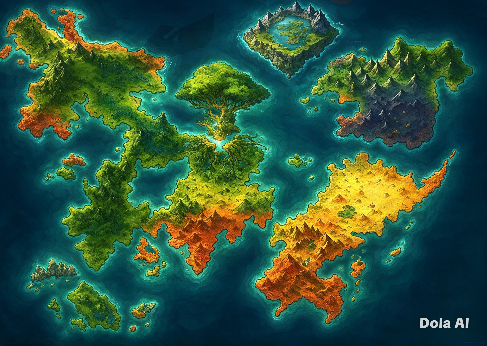

Os marcadores representam as localidades destacadas no mapa.
ATLAS DO MUNDO
Explore o mapa e selecione uma cidade para descobrir seus segredos.

Os marcadores representam as localidades destacadas no mapa.
REGISTROS DOS VIAJANTES
Deixe seu registro neste mundo. Compartilhe suas histórias com os próximos aventureiros!